import pandas as pd
import numpy as np
import matplotlib.pyplot as pltHW6: Part B - Applications
Note: Your code/analysis should be self-explanatory with necessary comments.
You should prepare a tutorial for this part. Your tutorial should include the following:
- Loading the dataset and setting up the dependent variable
- Writing the code for each classification method
- Printing the output and interpreting the results
- Summarizing the findings and discussing the pros and cons of each method
df = pd.read_csv('Tetuan-City-power-consumption.csv')df| DateTime | Temperature | Humidity | Wind Speed | general diffuse flows | diffuse flows | Zone 1 Power Consumption | Zone 2 Power Consumption | Zone 3 Power Consumption | |
|---|---|---|---|---|---|---|---|---|---|
| 0 | 1/1/2017 0:00 | 6.559 | 73.8 | 0.083 | 0.051 | 0.119 | 34055.69620 | 16128.87538 | 20240.96386 |
| 1 | 1/1/2017 0:10 | 6.414 | 74.5 | 0.083 | 0.070 | 0.085 | 29814.68354 | 19375.07599 | 20131.08434 |
| 2 | 1/1/2017 0:20 | 6.313 | 74.5 | 0.080 | 0.062 | 0.100 | 29128.10127 | 19006.68693 | 19668.43373 |
| 3 | 1/1/2017 0:30 | 6.121 | 75.0 | 0.083 | 0.091 | 0.096 | 28228.86076 | 18361.09422 | 18899.27711 |
| 4 | 1/1/2017 0:40 | 5.921 | 75.7 | 0.081 | 0.048 | 0.085 | 27335.69620 | 17872.34043 | 18442.40964 |
| ... | ... | ... | ... | ... | ... | ... | ... | ... | ... |
| 52411 | 12/30/2017 23:10 | 7.010 | 72.4 | 0.080 | 0.040 | 0.096 | 31160.45627 | 26857.31820 | 14780.31212 |
| 52412 | 12/30/2017 23:20 | 6.947 | 72.6 | 0.082 | 0.051 | 0.093 | 30430.41825 | 26124.57809 | 14428.81152 |
| 52413 | 12/30/2017 23:30 | 6.900 | 72.8 | 0.086 | 0.084 | 0.074 | 29590.87452 | 25277.69254 | 13806.48259 |
| 52414 | 12/30/2017 23:40 | 6.758 | 73.0 | 0.080 | 0.066 | 0.089 | 28958.17490 | 24692.23688 | 13512.60504 |
| 52415 | 12/30/2017 23:50 | 6.580 | 74.1 | 0.081 | 0.062 | 0.111 | 28349.80989 | 24055.23167 | 13345.49820 |
52416 rows × 9 columns
df.info()<class 'pandas.core.frame.DataFrame'>
RangeIndex: 52416 entries, 0 to 52415
Data columns (total 9 columns):
# Column Non-Null Count Dtype
--- ------ -------------- -----
0 DateTime 52416 non-null object
1 Temperature 52416 non-null float64
2 Humidity 52416 non-null float64
3 Wind Speed 52416 non-null float64
4 general diffuse flows 52416 non-null float64
5 diffuse flows 52416 non-null float64
6 Zone 1 Power Consumption 52416 non-null float64
7 Zone 2 Power Consumption 52416 non-null float64
8 Zone 3 Power Consumption 52416 non-null float64
dtypes: float64(8), object(1)
memory usage: 3.6+ MBQuestion 1
Use 'Temperature' as the independent variable and 'power consumption of Zone 1' as the dependent variable to conduct a simple linear regression.
from sklearn.linear_model import LinearRegressiondf.plot(x='Temperature',y='Zone 1 Power Consumption',kind='scatter')/shared-libs/python3.9/py/lib/python3.9/site-packages/pandas/plotting/_matplotlib/core.py:1041: UserWarning: No data for colormapping provided via 'c'. Parameters 'cmap' will be ignored
scatter = ax.scatter(<AxesSubplot: xlabel='Temperature', ylabel='Zone 1 Power Consumption'>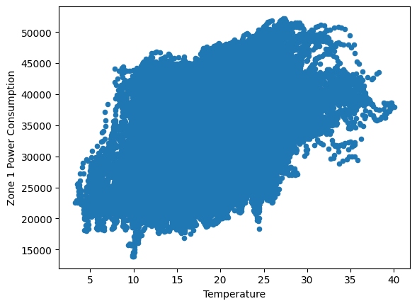
target1 = df[['Zone 1 Power Consumption']]
feature1 = df[['Temperature']]feature1| Temperature | |
|---|---|
| 0 | 6.559 |
| 1 | 6.414 |
| 2 | 6.313 |
| 3 | 6.121 |
| 4 | 5.921 |
| ... | ... |
| 52411 | 7.010 |
| 52412 | 6.947 |
| 52413 | 6.900 |
| 52414 | 6.758 |
| 52415 | 6.580 |
52416 rows × 1 columns
# Initialize instance of linear regression
linear_reg_model = LinearRegression()
# Fit model to the data
linear_reg_model.fit(feature1, target1)LinearRegression()In a Jupyter environment, please rerun this cell to show the HTML representation or trust the notebook.
On GitHub, the HTML representation is unable to render, please try loading this page with nbviewer.org.
LinearRegression()
# Results # y = mx + b
m = np.round(linear_reg_model.coef_[0][0],2) # slope; m
b = np.round(linear_reg_model.intercept_[0],2) # intercept; b
# plot visual
plt.plot(feature1,target1,'.')
plt.plot(feature1, linear_reg_model.predict(feature1) ,'-',label='y = mx + b; m={}, b={}'.format(m,b))
plt.xlabel(feature1.columns[0])
plt.ylabel(target1.columns[0])
plt.title('Linear Regression Model')
plt.legend()<matplotlib.legend.Legend at 0x7f0c75c70c10>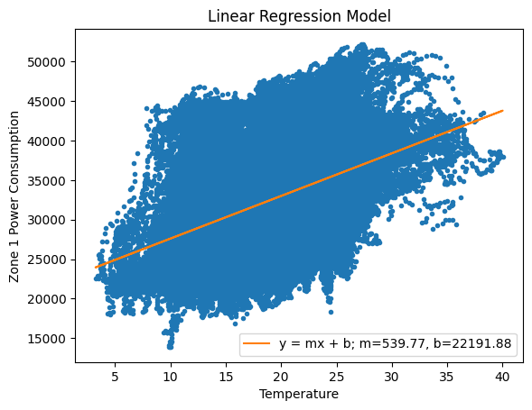
Question 2
Use 'Temperature' as the independent variable and 'power consumption of Zone 1' as the dependent variable to conduct a polynomial linear regression.
from sklearn.preprocessing import PolynomialFeaturespoly_feature = PolynomialFeatures(degree=2,include_bias=False)
X_poly1 = poly_feature.fit_transform(feature1)poly_reg = LinearRegression()
poly_reg.fit(X_poly1,target1)LinearRegression()In a Jupyter environment, please rerun this cell to show the HTML representation or trust the notebook.
On GitHub, the HTML representation is unable to render, please try loading this page with nbviewer.org.
LinearRegression()
# Results # y = ax^2 + bx + c
b,a = np.round(poly_reg.coef_[0],2) # coefficients a & b
c = np.round(poly_reg.intercept_[0],2) # intercept; c
# plot visual
plt.plot(feature1,target1,'.')
plt.plot(feature1, poly_reg.predict(X_poly1) ,'-',label='$y = ax^2 + bx + c$; a={}, b={}, c={}'.format(a,b,c))
plt.xlabel(feature1.columns[0])
plt.ylabel(target1.columns[0])
plt.title('Polynomial Regression (order=2) Model')
plt.legend()<matplotlib.legend.Legend at 0x7f0c75cb4d60>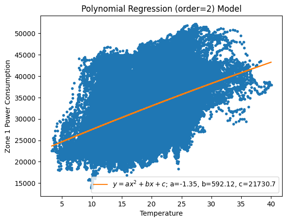
orders = [2,3,4,5,6,7,8,9,10]
plt.figure(figsize=(8,5))
plt.plot(feature1,target1,'.')
for i in orders:
poly_feature = PolynomialFeatures(degree=i,include_bias=False)
X_poly2 = poly_feature.fit_transform(feature1)
poly_reg = LinearRegression()
poly_reg.fit(X_poly2,target1)
# plot visual
plt.plot(feature1, poly_reg.predict(X_poly2) ,'-',label='Polynomial order={}'.format(i))
plt.xlabel(feature1.columns[0])
plt.ylabel(target1.columns[0])
#plt.title('Polynomial Regression (order={}) Model'.format(i))
plt.legend()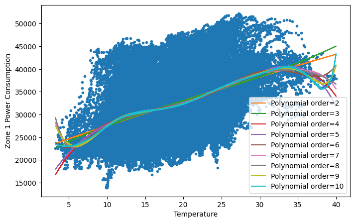
deg = 6
plt.figure(figsize=(8,5))
plt.plot(feature1,target1,'.')
poly_feature = PolynomialFeatures(degree=deg,include_bias=False)
X_poly = poly_feature.fit_transform(feature1)
poly_reg = LinearRegression()
poly_reg.fit(X_poly,target1)
# plot visual
plt.plot(feature1, poly_reg.predict(X_poly) ,'-',label='Polynomial order={}'.format(deg))
plt.xlabel(feature1.columns[0])
plt.ylabel(target1.columns[0])
plt.title('Polynomial Regression (order={}) Model'.format(deg))
plt.legend()<matplotlib.legend.Legend at 0x7f0c71b8cc70>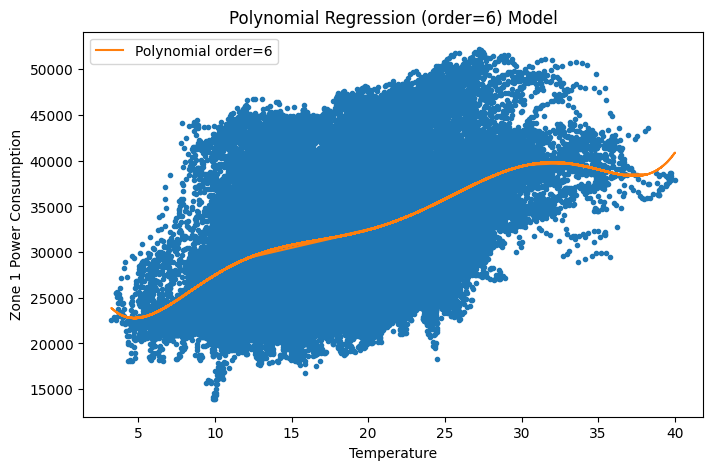
Question 3
Use 'Temperature' as the independent variable and 'power consumption of Zone 1' as the dependent variable to conduct a polynomial linear regression with regularized term of your choice (Ridge, Lasso, or Elastic Net).
from sklearn.linear_model import ElasticNetenet = ElasticNet(alpha=0.0)
enet.fit(X_poly,target1)/tmp/ipykernel_797/434787772.py:2: UserWarning: With alpha=0, this algorithm does not converge well. You are advised to use the LinearRegression estimator
enet.fit(X_poly,target1)
/shared-libs/python3.9/py/lib/python3.9/site-packages/sklearn/linear_model/_coordinate_descent.py:648: UserWarning: Coordinate descent with no regularization may lead to unexpected results and is discouraged.
model = cd_fast.enet_coordinate_descent(
/shared-libs/python3.9/py/lib/python3.9/site-packages/sklearn/linear_model/_coordinate_descent.py:648: ConvergenceWarning: Objective did not converge. You might want to increase the number of iterations, check the scale of the features or consider increasing regularisation. Duality gap: 1.070e+12, tolerance: 2.665e+08 Linear regression models with null weight for the l1 regularization term are more efficiently fitted using one of the solvers implemented in sklearn.linear_model.Ridge/RidgeCV instead.
model = cd_fast.enet_coordinate_descent(ElasticNet(alpha=0.0)In a Jupyter environment, please rerun this cell to show the HTML representation or trust the notebook.
On GitHub, the HTML representation is unable to render, please try loading this page with nbviewer.org.
ElasticNet(alpha=0.0)
# plot visual
plt.plot(feature1,target1,'.')
plt.plot(feature1, enet.predict(X_poly) ,'-',label='elasticnet')
plt.xlabel(feature1.columns[0])
plt.ylabel(target1.columns[0])
plt.title('ElasticNet Polynomial Regression (order={}) Model'.format(deg))
plt.legend()<matplotlib.legend.Legend at 0x7f0c71aaa820>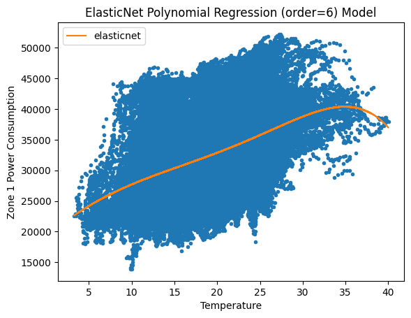
Question 4
Use any combination of independent variables ['Temperature', 'Humidity', 'Wind Speed', 'general diffuse flows'], to predict 'power consumption of Zone 1'.
df.columnsIndex(['DateTime', 'Temperature', 'Humidity', 'Wind Speed',
'general diffuse flows', 'diffuse flows', 'Zone 1 Power Consumption',
'Zone 2 Power Consumption', 'Zone 3 Power Consumption'],
dtype='object')target2 = df[['Zone 1 Power Consumption']]
feature2 = df[['Temperature', 'Humidity', 'Wind Speed', 'general diffuse flows']]for i in feature2.columns:
plt.figure()
plt.plot(feature2[i],target2,'.')
plt.xlabel(i)
plt.ylabel(target2.columns[0])
plt.title(i)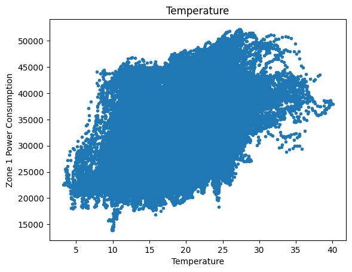
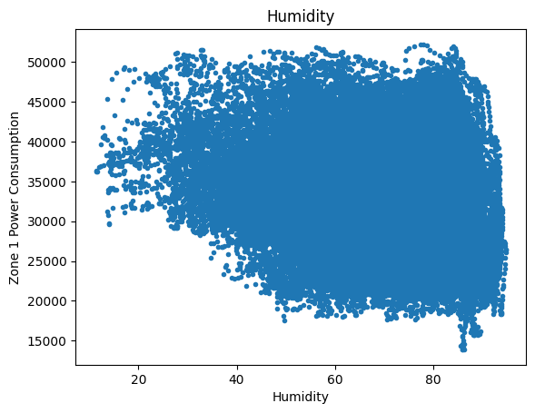
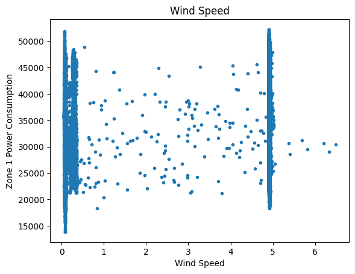
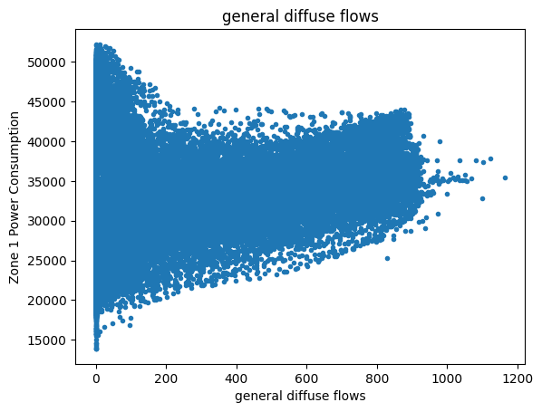
from sklearn.metrics import mean_absolute_error,mean_squared_error,r2_scorefor i in range(1,len(feature2.columns)+1):
feature21 = feature2[feature2.columns[:i]]
# Initialize instance of linear regression
mult_reg = LinearRegression()
# Fit model to the data
mult_reg.fit(feature21, target2)
mult_pred = mult_reg.predict(feature21)
print()
print('feature columns: {}'.format(list(feature21.columns)))
print('mse = {}'.format(mean_squared_error(target2,mult_pred)))
print('mae = {}'.format(mean_absolute_error(target2,mult_pred)))
print('r2 = {}'.format(r2_score(target2,mult_pred)))
feature columns: ['Temperature']
mse = 40990682.08886528
mae = 5233.004380334254
r2 = 0.19379434309343935
feature columns: ['Temperature', 'Humidity']
mse = 40526667.86295068
mae = 5206.155738792154
r2 = 0.20292058532103774
feature columns: ['Temperature', 'Humidity', 'Wind Speed']
mse = 40451577.95273873
mae = 5199.44333527437
r2 = 0.20439745536331322
feature columns: ['Temperature', 'Humidity', 'Wind Speed', 'general diffuse flows']
mse = 40305700.482682765
mae = 5219.020133775618
r2 = 0.20726657672409887Question 5
Summarize your findings.
lin_pred = linear_reg_model.predict(feature1)
poly_pred = poly_reg.predict(X_poly)
enet_pred = enet.predict(X_poly)
# linear/polynomial regression models for Zone1 consumption vs Temperature
plt.plot(feature1,target1,'.')
plt.plot(feature1, lin_pred ,'-',label='Linear Regression; r2 = {}'.format(np.round(r2_score(lin_pred,target1),5)))
plt.plot(feature1, poly_pred ,'-',label='Polynomial (order = {}); r2 = {}'.format(deg,np.round(r2_score(poly_pred,target1),5)))
plt.plot(feature1, enet_pred ,'-',label='ElasticNet; r2 = {}'.format(np.round(r2_score(enet_pred,target1),5)))
plt.xlabel(feature1.columns[0])
plt.ylabel(target1.columns[0])
plt.legend()
plt.title('Single feature (Temperature) regression model results for Zone1')Text(0.5, 1.0, 'Single feature (Temperature) regression model results for Zone1')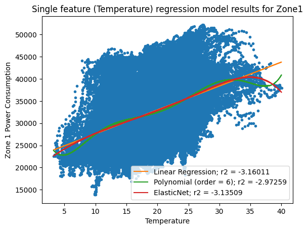
# Initialize instance of linear regression
mult_reg = LinearRegression()
# Fit model to the data
mult_reg.fit(feature2, target2)
mult_pred = mult_reg.predict(feature2)
print()
print('best multiple regression model results:')
print('mse = {}'.format(mean_squared_error(target2,mult_pred)))
print('mae = {}'.format(mean_absolute_error(target2,mult_pred)))
print('r2 = {}'.format(r2_score(target2,mult_pred)))
best multiple regression model results:
mse = 40305700.482682765
mae = 5219.020133775618
r2 = 0.20726657672409887Interestingly, the r2 (r-squared) score suggests the multiple regression model (with all suggested features) was the “best” performing model.
Which kinda makes sense, in my opinion, because temperature and zone 1 consumption didn’t have a very high correlation to begin with.